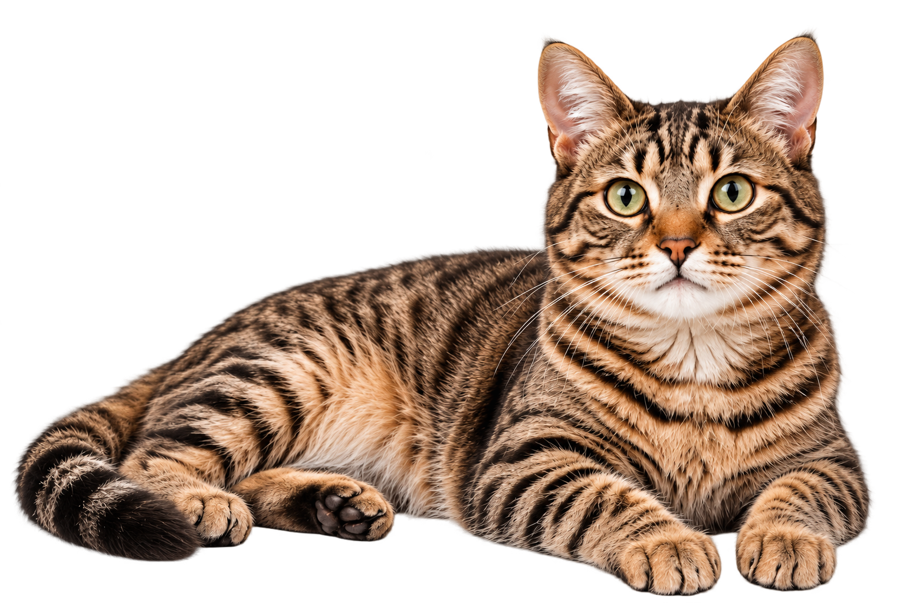

Pequeña decisión, gran impacto.
Esterilizar a tu gato es un acto de amor que transforma su vida y la de muchos más.
Una decisión responsable para una vida más sana y feliz.
La esterilización previene enfermedades, evita camadas no planificadas y mejora la calidad de vida de tu gato.
Iniciar sesión
Cuidamos su salud,
mejoramos su vida
Conoce cada aspecto del procedimiento para tomar la mejor decisión.
Descubre qué es la esterilización felina y por qué es tan importante para su salud y bienestar.
Ver másConoce cómo es el proceso paso a paso, desde la preparación hasta la recuperación.
Ver másAprende sobre los múltiples beneficios para la salud de tu gato y para la comunidad felina.
Ver másInfórmate sobre los riesgos posibles y cómo nuestro equipo los minimiza para garantizar su seguridad.
Ver másSigue nuestras recomendaciones para una recuperación rápida y sin complicaciones.
Ver másResolvemos las dudas más comunes sobre la esterilización felina.
Ver más
Esterilizar a tu gato es un acto de amor que transforma su vida y la de muchos más.